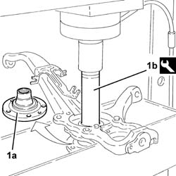
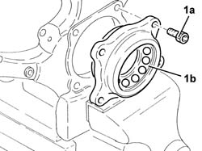
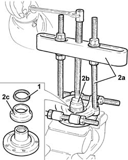
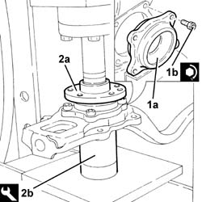

4450C34 bearing of one front wheel hub, l/h or r/h - replace with pillar removed
- Path
- Procedures > 44 SUSPENSION AND WHEELS > 4450 WHEELS AND HUBS > 4450C front wheel hubs > 4450C34 bearing of one front wheel hub, l/h or r/h - replace with pillar removed
- Kind
- repair procedure (removal / refitting; the operation number is the code)
- Applies to
- all engines; all production periods
- Interactive page
- https://sloeber94.github.io/elrnDB-a147/en/#/3025374
Applies to: all engines; all production periods
 Removing
Removing
 Refitting
Refitting1. Remove the wheel hub (1a) complete with hub bearing inner race using a hydraulic press and tool (1b).
 | Name | Country |
|---|---|---|
1b | Drift | 1.870.631.000 |

Applies to: all engines; all production periods
Position the steering knuckle in a vice fitted with protective jaws.
1. Undo the bolts (1a) and remove the hub bearing flange with bearing inner race and balls.

Applies to: all engines; all production periods
Position the front hub in a vice fitted with protective jaws.
1. Prise up and remove the dust cover from the wheel hub.
2. Use a suitable extractor (2a) with washer (2b) to remove hub bearing inner race (2c).

Applies to: all engines; all production periods
Refitting
Removing1. Fit a new hub bearing (1a) in its seat on the front knuckle and tighten bolts (1b) to the specified torque.
 | Fastening | Component | Ø | Value (daNm) |
|---|---|---|---|---|
1b | Bolt | FRONT HUB BEARING/S. | M10 | (Front steering knuckle side) 7.6 ÷ 8.4 |
2. Refit front wheel hub (2a) using a hydraulic perss and tool (2b).
| Name | Country |
|---|---|---|
2b | Fitting tool | 1.870.225.002 |
